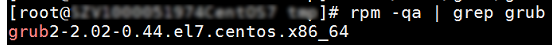

If an ECS requires a long period of time to start, you can change the default timeout to speed up the startup.
- Log in to the ECS.
- Run the following command to switch to user root:
sudo su
- Run the following command to obtain the grub version:
Figure 1 Viewing the grub version
 - Change the timeout in the grub file to 0s.
- If the grub version is earlier than 2:
Open the /boot/grub/grub.cfg or /boot/grub/menu.lst file and change the timeout value to 0.
Figure 2 Changing timeout duration
- If the grub version is earlier than 2: